Zunächst werden die kleinen Bauteile (Widerstände R1 bis R4, Diode D19 und Folienkondensator C2) von oben durch die Löcher in der Platine gesteckt. Die Beine der Bauelemente müssen dafür auf die richtige Länge gebogen werden. Das kann man mit einer Zange oder auch mit der Hand machen.
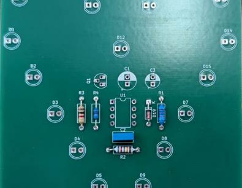Achtung: Bei der Diode D19 muss die Seite mit dem schwarzen Strich durch das mit einem K markierte Loch gesteckt werden!
- Die Widerstände haben unterschiedliche Werte und sollten nicht vertauscht werden.
- R1 = 12KΩ
- R2 = 120KΩ
- R3 = 1kΩ
- R4 = 10KΩ
Der Wert des Widerstandes kann mit dem Farbcode abgelesen werden oder mit einem Multimeter nachgemessen werden.
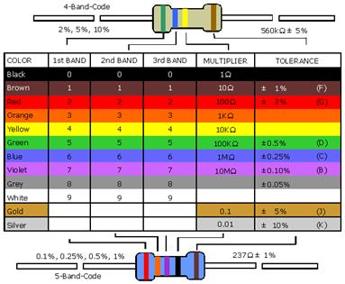 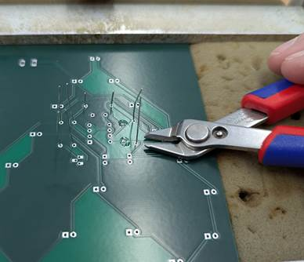Anschließend können die Beinchen auf der Rückseite mit einem Seitenschneider gekürzt werden. Aber nicht zu kurz abschneiden, die Beine sollten noch ca. 2 mm aus dem Loch herausschauen. Lass die Beine lieber etwas weiter rausschauen, hinterher kann man immer noch mehr abschneiden, falls nötig.
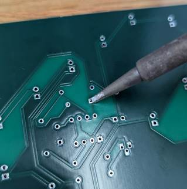Jetzt müssen alle Löcher, aus denen ein Beinchen herausguckt, gelötet werden. Hierfür stellt man den Lötkolben auf 380 Grad ein und hält ihn seitlich direkt an das herausstehende Beinchen. Von der anderen Seite schiebt man das Lötzinn gegen die Lötstelle. Dieser wird flüssig und soll in das Loch fließen und es gänzlich bedecken.
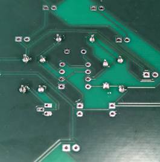Die fertigen Lötstellen sollten in etwa so aussehen, dass die Beinchen noch erkennbar sind, das Loch aber nicht mehr zu sehen ist.
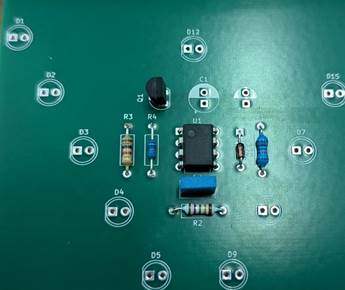Als nächstes kann der IC (integrated circuit) U1 und der Transistor Q1 von oben auf die Platine gesteckt werden. Bei dem IC, U1, ist darauf zu achten, dass der Punkt auf dem Gehäuse oben links sitzt.
Änderung: Der IC U1 soll nicht direkt durch die Platine gesteckt werden, sondern zuerst einen Sockel auf die Platine löten und dann den IC auf den Sockel stecken.
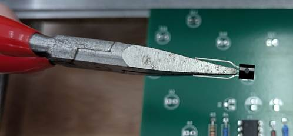Das mittlere Bein des Transistors Q1 muss etwas nach vorne und dann wieder nach unten gebogen werden, damit der Transistor in die Löcher passt.
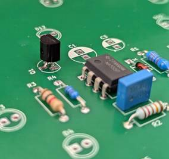Der schwarze Körper des Transistor Q1 sollte nicht direkt auf der Platine aufliegen, sondern etwas abstehen. Wenn der IC U1 und der Transistor Q1 richtig sitzen, müssen beide wieder von der Unterseite der Platine festgelötet werden. Die Beinchen des Transistors müssen noch gekürzt werden. Die Beinchen des ICs haben bereits die ideale Länge. Achtet beim Löten darauf, dass die Beinchen nicht untereinander verbunden werden, sondern jedes Beinchen nur mit dem Loch, in dem es steckt.
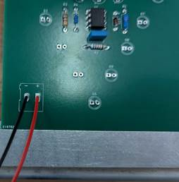Als nächstes kommen die Anschlussleitungen unten links an die Platine. Wichtig ist, dass die rote Leitung an den positiven Anschluss kommt und die schwarze Leitung an den negativen Anschluss. Auch die beiden Anschlussleitungen müssen von der Rückseite festgelötet werden. Hier ist es aber nicht notwendig, die Leitungen hinten zu kürzen.
Alternative: Wer nicht möchte, dass man die Leitungen von vorne sieht, kann diese auch von der Rückseite durch das Loch stecken und von der Vorderseite festlöten. Wichtig ist nur, dass die rote und schwarze Leitung nicht vertauscht werden.
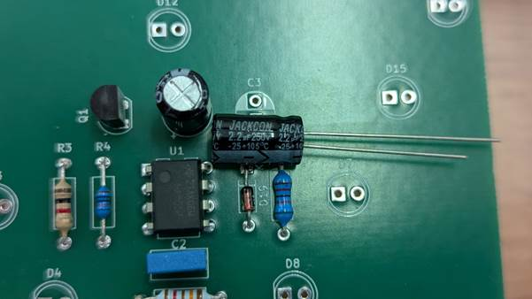Die Kondensatoren C1 und C3 sehen zwar sehr ähnlich aus, haben aber eine unterschiedliche Kapazität.
- C1 = 10µF
- C3 = 2.2µF
Die Kapazität ist seitlich auf den Kondensatoren aufgedruckt. Außerdem ist es wichtig, dass die Seite mit dem weißen Strich durch das obere Loch mit dem weißen Halbkreis gesteckt wird. Wenn die Kondensatoren C1 und C3 richtig von oben durch die Löcher gesteckt sind, müssen sie wieder von der Rückseite gekürzt und festgelötet werden.
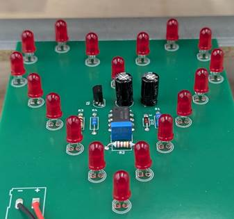Als letztes werden die 18 LEDs von oben durch die Löcher mit der Bezeichnung D1 bis D18 gesteckt.
Wichtig: Die LEDs haben auf einer Seite eine flache Kante. Diese muss nach links zeigen, genauso wie der Aufdruck auf der Platine. Die Beine der LEDs haben eine Verdickung, sodass sie nicht direkt auf der Platine aufliegen, sondern etwas abstehen.
Tipp: Es ist sehr schwer, die LEDs genau gerade festzulöten, daher empfiehlt es sich, alle LEDs entweder nach oben oder nach unten zu neigen. Nach dem Festlöten kann man diese auch noch vorsichtig wieder geradebiegen.
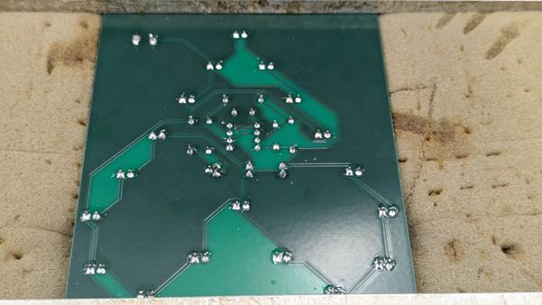Nachdem die Beine der LEDs gekürzt wurden und festgelötet sind, sollten alle Löcher auf der Rückseite mit Bauteilbeinchen und Lötzinn gefüllt sein. Schaut am besten nochmal nach, ob jedes Loch auch wirklich nur mit dem Bein, das in ihm steckt, verbunden ist und keine Verbindung zwischen den nah beieinander liegenden Löchern vorliegt. Dann kann die Batterie an die Anschlussleitung angesteckt werden und das Gadget ist fertig.